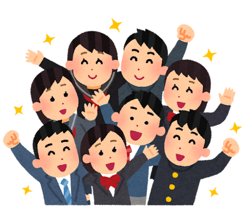

바롬종합설계프로젝트
디지털 속 정서적 자립,
디지털 속 정서적 자립,
SWUnion이 동행합니다.
청소년과 AI의 올바른 경계선 설정을 위해 행동하는 프로젝트 슈니온(SWUnion)을 소개합니다. 서울여자대학교(SWU)와 연합(union)의 가치를 더해, 인공지능 비서와의 일방적인 의존 관계를 넘어 주체적인 자아를 형성하도록 돕는 안전망을 설계합니다.
이보연 교수님 지도
과의존 예방 솔루션

"AI 챗봇은 따뜻하게 대답하지만 나의 미래를 함께 고민해 주는 감정 주체는 아닙니다. 우리는 청소년들이 기술을 주체적으로 부릴 수 있도록 돕습니다."
SWUnion Crew
TEAM LEADER
소프트웨어학과
한지희
프랑스문화콘텐츠학과
이슬이
식품공학과
이지수
디지털미디어학과
서희연
비즈니스커뮤니케이션학과
조수연
ACTIVITY ARCHIVE
올바른 AI 활용을 향한
올바른 AI 활용을 향한
SWUnion의 발걸음
청소년이 자아존중감을 바탕으로 디지털 독립성을 형성할 수 있도록 돕기 위해, SWUnion은 AI 챗봇의 올바른 사용을 촉진하는 다양한 활동을 펼쳐왔습니다.
오프라인 부스 운영
10대 학생들과 직접 소통하며 AI 정서 의존의 위험성을 알렸습니다.
AI 가이드라인 배포
AI 챗봇의 올바른 사용을 위한 윤리적 가이드라인을 부스 활동 중 배포하였습니다.